Contents
Summary: what this page is and how to use it
This page is organized as a set of source-linked entries. Each entry begins with a short overview and then expands into details, images (where available), and a source list.
- Use the Contents panel to jump between sections.
- Deep links (like
#tabloids-pageants) take you directly to a specific entry. - Corrections and context are welcome if you include primary documents or reputable reporting.
Devil’s Advocate: Trump’s strongest defense (Epstein-file context)
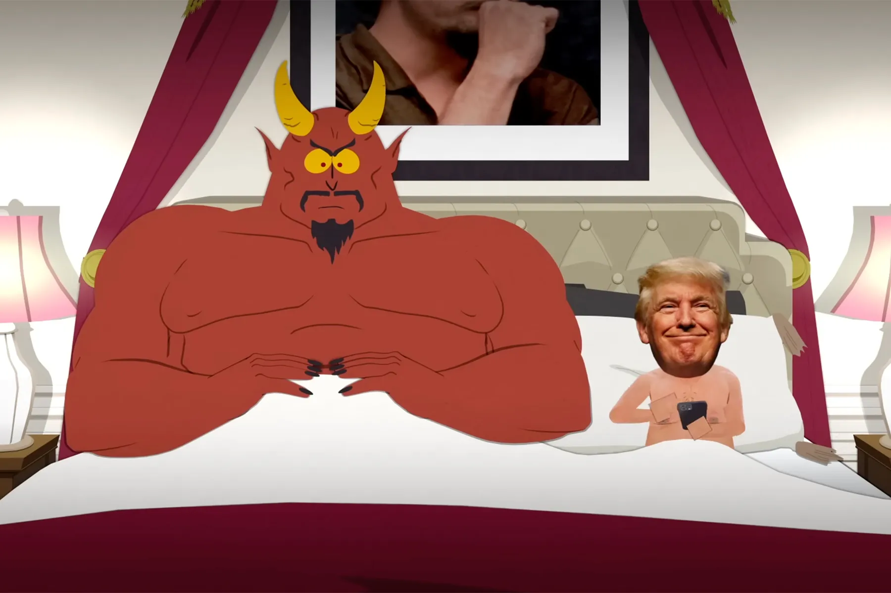
trump-and-devil.pngThis entry summarizes the strongest publicly cited points used to argue that the “Epstein files” do not establish criminal wrongdoing by current U.S. President Donald J. Trump. This does not mean Trump is innocent; it means that, in the public record summarized here, the cited materials are argued to be insufficient to convict without additional corroborated evidence.
Points commonly cited as exculpatory
- No public victim accusation (as described in reporting): NBC News reported that Virginia Giuffre (a key Epstein survivor) never accused Trump of wrongdoing and wrote in a posthumously published memoir that Trump “couldn’t have been friendlier” when she met him at Mar-a-Lago.
- Claimed distancing / ban from Mar-a-Lago: Trump has said Epstein “stole” Giuffre from the Mar-a-Lago spa, and White House communications described Trump ejecting Epstein from the club “for being a creep.” (The timing and underlying details are disputed in broader reporting; this bullet reflects those statements as cited by NBC.)
- Epstein emails cited by the White House as non-incriminating: NBC News reported on emails attributed to Epstein that reference Trump, including one stating that the “dog that hasn’t barked is trump” and that a victim “spent hours” with Trump but “he has never once been mentioned.” The White House said these emails “prove absolutely nothing” beyond its view that Trump “did nothing wrong.”
- Mentions are not evidence: Supporters argue that name mentions, social overlap, and even travel logs are not by themselves proof of participation in Epstein’s crimes. The strongest exculpatory claim in this frame is the absence of a clear victim allegation or corroborated criminal conduct within the released materials.
DOJ statements and review summaries
- DOJ press release (Jan 30, 2026): The Department of Justice stated that the production includes public submissions and may include fake or falsely submitted materials, and that some documents contain “untrue and sensationalist claims” against President Trump submitted shortly before the 2020 election. DOJ added: “To be clear, the claims are unfounded and false …”
- DOJ/FBI memo (review findings): A DOJ-hosted memo summarizing review conclusions is frequently cited as stating that the review did not identify a “client list,” credible evidence of blackmail of prominent individuals, or a basis for investigating uncharged third parties. Readers should consult the memo directly.
Limits and open questions
This entry is not an “exoneration” finding, and it does not resolve questions about what Trump may have known (or when). It summarizes what is cited as the most favorable reading of the currently referenced releases in mainstream coverage.
- DOJ (Jan 30, 2026): “Department of Justice Publishes 3.5 Million Responsive Pages…” (includes statement on unfounded claims)
- DOJ: DOJ/FBI memo (review findings) — primary document link
- DOJ: Letter to Congress referenced in the Jan 30, 2026 press release
- NBC News: Coverage of Epstein emails referencing Trump (includes excerpts and White House response)
- NBC News: Trump statements about Giuffre and Mar-a-Lago; White House characterization of Epstein ban
- DocumentCloud: House Oversight release of an Epstein email (as referenced in NBC coverage)
- Snopes: Context on DOJ-released prosecutor email about Trump’s appearances in Epstein flight records
- DOJ: EFTA00016732 (referenced by Snopes)
- DOJ: EFTA00028716 (referenced by Snopes)
- DOJ: Epstein files portal
Trump’s Remarks about Ghislaine Maxwell
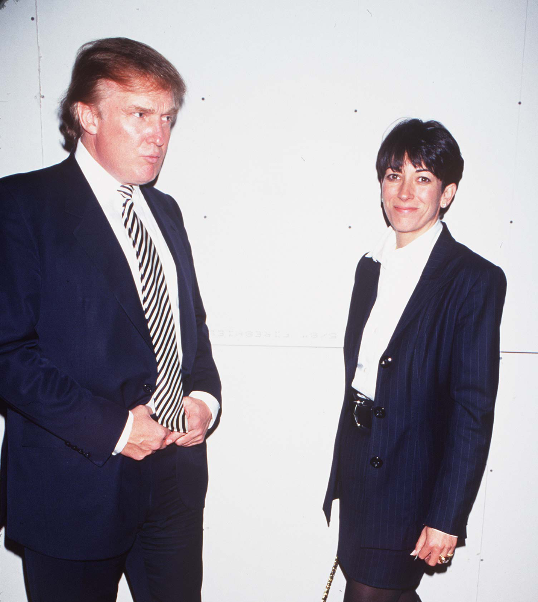
trump-ghislane.pngIn July 2020, after Ghislaine Maxwell was arrested on federal charges related to procuring and trafficking minors for Epstein, Trump drew criticism after saying he “wished her well” when asked about the case, and noting he had met her “numerous times.”
Reporting has also documented that Trump and Maxwell moved in overlapping elite social circles for years. Photos and event coverage from the period show Trump and Melania pictured with Epstein and Maxwell at Mar-a-Lago (February 2000), and Maxwell appearing in the wider Trump/Epstein social orbit.
Case outcome: Maxwell was convicted in December 2021 on five felony counts related to recruiting and grooming minors for Epstein’s abuse, and she was sentenced in June 2022 to 20 years in federal prison. In September 2024, a federal appeals court upheld her conviction.
2025 DOJ interview transcripts (as reported): In 2025, the Trump administration released transcripts of Justice Department interviews with Maxwell. In reporting about those transcripts, Maxwell told DOJ officials she never witnessed Trump in an “inappropriate setting,” and she characterized Trump and Epstein as not “close friends.” These statements are not exculpatory proof; they are included because they are part of the current public record around Maxwell’s posture toward Trump.
- Axios (July 21, 2020)
- Washington Post (July 22, 2020)
- ABC News: timeline including 2000 Mar-a-Lago photo context (Trump/Melania with Epstein and Maxwell)
- AP News (June 28, 2022): Maxwell sentenced to 20 years
- AP News (Sept 17, 2024): appeals court upholds Maxwell conviction
- PBS News (Aug 2025): DOJ interview transcripts (Maxwell statements re Trump)
- NPR (Aug 2025): summary/reporting on DOJ interview transcripts (Maxwell statements re Trump)
Roy Cohn, disbarment, and long-standing blackmail allegations
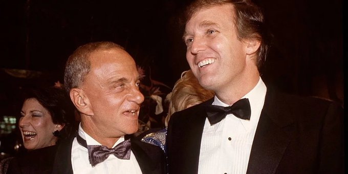
trump-cohn.png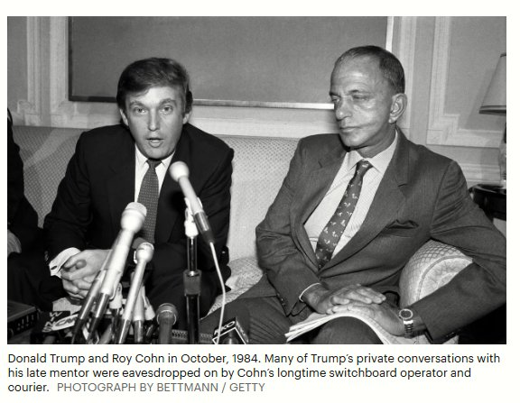
trump-cohn2.png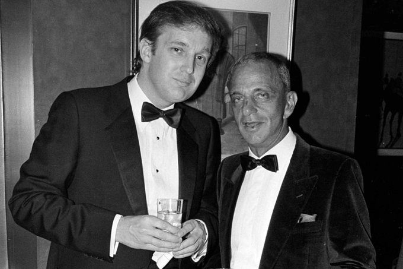
trump-cohn3.pngCritics argue that Donald Trump’s earliest and most formative legal mentor was Roy Cohn—a figure whose career is documented to include mob associations, multiple criminal indictments, and eventual disbarment for unethical conduct, and whose private life has been the subject of decades of allegations involving coercion, sexual compromise, and blackmail.
Cohn rose to national prominence as chief counsel to Senator Joseph McCarthy during the Red Scare, later becoming a powerful New York lawyer representing organized-crime figures and political elites. He was disbarred in 1986 for professional misconduct, including dishonesty, conflicts of interest, and misappropriation of client funds.
Documented misconduct and historical record
- Disbarment and indictments: Cohn was indicted multiple times in his career (including for bribery and extortion), though often acquitted. He was ultimately disbarred by the New York Appellate Division for unethical conduct.
- Mob and fixer role: Mainstream biographies and court reporting describe Cohn as a lawyer who used intimidation, leverage, and back-channel influence to protect powerful clients.
- Lavender Scare hypocrisy: While helping lead government purges of suspected homosexuals, Cohn privately denied being gay until his death from AIDS-related complications in 1986.
Allegations of sexual blackmail (contested and unproven)
Beyond proven financial and ethical misconduct, Cohn has long been accused—without criminal convictions—of participating in sexual blackmail operations targeting powerful figures. These claims appear in investigative books, sworn testimony, and interviews, but rely largely on witness accounts rather than physical evidence.
Central to these allegations are descriptions of gatherings at New York’s Plaza Hotel (including a suite sometimes referred to as the “blue suite”), where compromising situations were allegedly orchestrated to gain leverage over politicians and officials. Some accounts specifically allege the presence of young men or minors; these claims remain disputed and were never adjudicated in court.
One frequently cited witness is Susan Rosenstiel, ex-wife of liquor magnate Lewis Rosenstiel, who testified in divorce proceedings and later interviews that she observed parties involving J. Edgar Hoover, Roy Cohn, and young males. Her testimony was given under oath and deemed credible by a New York judge, but no corroborating physical evidence (such as photographs or recordings) has ever surfaced publicly.
Additional claims come from journalists, biographers, and former law-enforcement figures who describe Cohn as using “compromise” as a tool of power. While these narratives form a consistent pattern across decades of reporting, historians generally caution that the most extreme allegations remain circumstantial.
Why this matters in Trump’s context
Critics argue this is concerning Trump’s case that he openly credits Roy Cohn as a mentor who taught him to “hit back harder,” never apologize, and treat ethics as negotiable. Even if one sets aside the unproven sexual blackmail claims, Cohn’s documented career establishes a clear model of power built on intimidation, leverage, and impunity—methods Trump later mirrored in business, media, and politics.
Critics argue that this lineage matters: Trump did not emerge from nowhere, but from a New York ecosystem where rule-bending fixers were normalized. Supporters respond that Cohn’s sins are his own and do not transfer to Trump. This section is presented to explain why observers find the association troubling, not to assert guilt by inheritance.
Critics also argue that the “fixer” pattern didn’t end with Cohn: they point to later figures such as Michael Cohen and the tabloid-era damage-control ecosystem as evidence of a long-running culture of spin, suppression, and hardball reputation management.
- Roy Cohn — Disbarment and indictments (overview)
- The Guardian: Catch-and-kill coverage touching the tabloid-era damage-control ecosystem
- Roy Cohn — Sexual blackmail allegations (overview)
- Nicholas von Hoffman, Citizen Cohn (1988) — standard biography based on interviews with associates
- Anthony Summers, Official and Confidential: The Secret Life of J. Edgar Hoover (1993)
-
Whitney Webb, One Nation Under Blackmail, Vol. 1 (2022)
(Extensively footnoted; some conclusions debated among historians) - ConspiracyArchive: interview-based claim (unverified)
- New York Times archive: coverage of Roy Cohn indictments and legal proceedings (1960s–1970s)
- Where’s My Roy Cohn? (2019 documentary) — interviews with former associates and journalists
Mark Foley’s Friendship with Trump
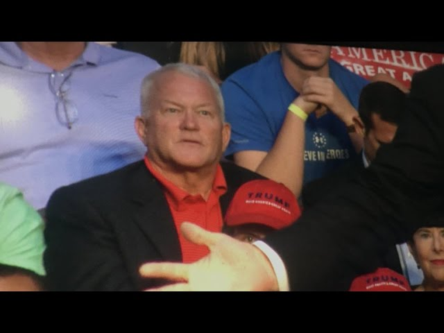
mark-foley.pngFormer Congressman Mark Foley resigned in 2006 after sending sexually explicit messages to underage pages. In 2016, he was publicly seen at a Trump rally and described Trump as a long-time friend.
George Nader and repeated child-sex convictions
Critics argue that George Nader—an advisor involved in Trump’s 2016 campaign orbit on Middle East policy—has a long, documented history of convictions involving child sexual abuse and child pornography.
Nader attended meetings with Trump transition officials after the 2016 election and played a role in informal, back-channel communications between Gulf-state actors and individuals connected to the incoming administration. His involvement has been described in court filings and mainstream reporting related to foreign-influence investigations.
Criminal history (documented)
- 1991 (United States): Pleaded guilty to transporting child pornography and served time in federal prison.
- 2003 (Czech Republic): Convicted of sexually abusing boys and sentenced under Czech law.
- 2020 (United States): Pleaded guilty to federal charges of child sex trafficking and possession of child pornography; later sentenced to additional prison time.
These convictions are not disputed and are established matters of record. Trump has not been accused of participating in Nader’s crimes. The concern raised by critics is the pattern: a repeatedly convicted child-sex offender was able to operate within proximity to a U.S. presidential campaign and transition process.
Why critics consider this relevant
Critics argue this is concerning Trump’s credibility on issues of judgment and vetting that Nader—whose criminal record predates the 2016 campaign—was present in sensitive political environments. Supporters argue that Nader acted independently and that campaigns inevitably encounter unsavory figures. Critics counter that repeated proximity to convicted offenders across multiple contexts forms a troubling pattern.
Robert Morris, Trump’s evangelical adviser, indicted on child abuse charges
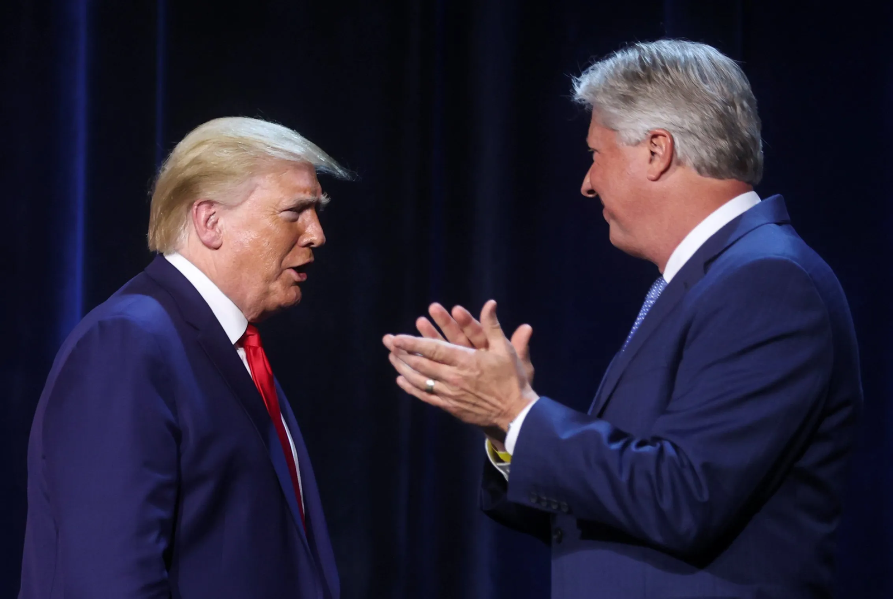
robert-morris-trump.png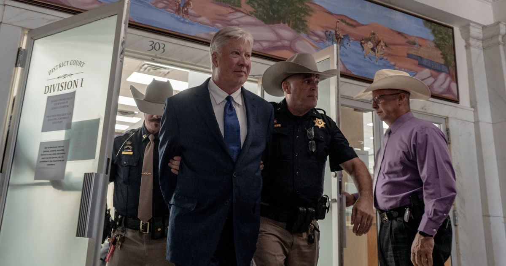
robert-morris-arrested.pngCritics argue that Robert Morris—an influential megachurch pastor who served as a faith advisor to Donald Trump during his first term and was part of Trump’s evangelical advisory ecosystem—was indicted in 2025 on multiple felony counts related to alleged child sexual abuse.
Morris is the founding pastor of a Texas-based megachurch and was widely regarded as a prominent figure in evangelical political circles. He was publicly associated with Trump through advisory roles and religious outreach efforts during Trump’s presidency.
Indictment details (pending case)
- Year indicted: 2025
- Charges: Five felony counts of lewd or indecent acts with a child under the age of 16
- Alleged victim: A 12-year-old girl
- Timeframe of alleged abuse: 1980s
- Potential penalty: Up to 20 years in prison per count if convicted
These charges remain allegations until proven in court. Morris has denied wrongdoing, and no conviction has yet occurred. Trump has not been accused of involvement in the alleged abuse.
Why critics consider this relevant
Critics argue this is concerning Trump’s public image that a spiritual adviser associated with his administration now faces serious child-abuse charges. Critics argue that repeated proximity to individuals later charged or convicted of sexual crimes— particularly involving minors—raises questions about judgment, vetting, and the moral authority claimed by Trump’s evangelical support base.
Supporters respond that Morris’s alleged conduct predates his advisory role and that Trump cannot be held responsible for the private actions of religious figures. This section is included to document why observers view the association as troubling in light of broader patterns discussed elsewhere on this page.
Andrew and Tristan Tate, serious charges, and Trump-family adjacency
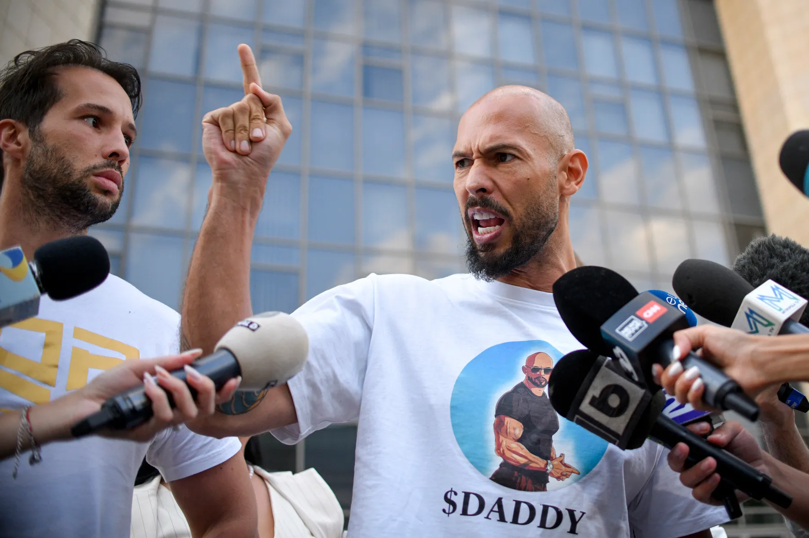
tate-brothers.png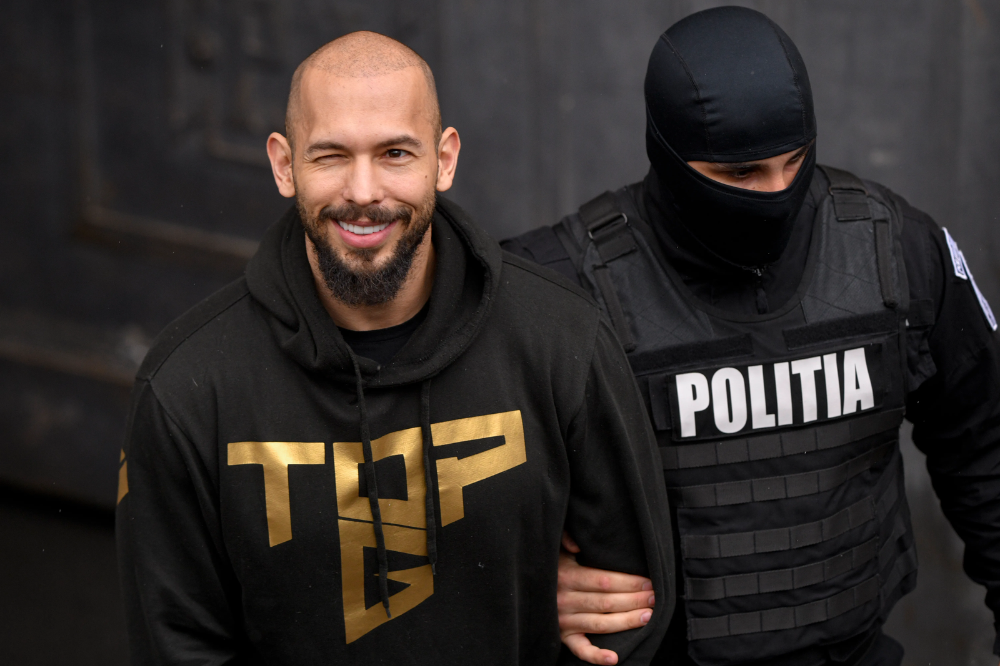
tate-brothers2.png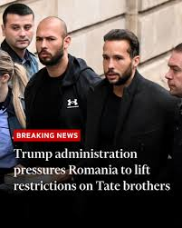
tate-brothers3.pngCritics argue that Andrew Tate and his brother Tristan Tate—online influencers charged in Romania with rape, human trafficking, and forming an organized criminal group—have formed public-facing associations with members of the Trump family in recent years.
Romanian prosecutors allege that the Tate brothers recruited women through deception, coerced them into producing online sexual content, and exercised control through intimidation and exploitation. Both brothers deny the charges, and the cases remain ongoing within the Romanian legal system.
Nature of the association
- Reporting has described the Tate brothers’ association with the Trump-family orbit as largely social / media-adjacent, but extending back at least to 2017 via Donald Trump Jr.
- Andrew Tate has publicly praised Donald Trump and aligned himself rhetorically with Trump-style politics.
- Social-media posts and reporting have linked the Tate brothers to Donald Trump Jr. and to pro-Trump influencer ecosystems.
- Multiple outlets have reported that after Trump’s 2024 victory, U.S. officials raised the Tate brothers’ Romania travel restrictions with Romanian officials; Romanian officials have denied improper pressure, while confirming conversations occurred.
There is no allegation that Donald Trump, Donald Trump Jr., or other family members participated in or had knowledge of the alleged crimes involving the Tate brothers. The concern raised by critics is one of optics and judgment: individuals facing serious trafficking and rape charges being welcomed or amplified within the same political-cultural ecosystem.
Reported instances of alliance, amplification, or intervention (selected examples)
- Donald Trump Jr. support (reported): The Guardian and PBS reporting described Trump Jr. as having a long-running relationship with Andrew Tate (described as friendship going back to 2016/2017 in that reporting) and as publicly criticizing the brothers’ detention in Romania.
- Barron Trump contact (reported): In a PBS NewsHour segment discussing a New York Times investigation, reporter Megan Twohey said the reporting found Barron Trump was a fan of Andrew Tate and that they spoke by Zoom in 2024 via a mutual friend. This is included as reported and is not independently verified on this page beyond that coverage.
- Grenell raising the travel-ban issue: The Guardian reported that Romania’s foreign minister confirmed Trump’s envoy Richard Grenell spoke with him about the Tate brothers’ travel ban at the Munich Security Conference (Romanian officials stated there was no threat/pressure).
- Paul Ingrassia role (reported): The Guardian reported that Paul Ingrassia, described as one of the Tate brothers’ lawyers, was sworn in as the White House liaison for the Department of Justice, and wrote publicly in their defense.
- Alina Habba public praise: The Guardian quoted Habba telling Tate in a rightwing podcast appearance that she was a “big fan,” and framing Tate’s legal troubles as similar to what she claimed Trump experienced.
- Pro-Tate media circuit overlap: The Guardian described Trump appearing on a 2024 stream with Adin Ross (described as a Tate collaborator), and JD Vance appearing on the Nelk Boys podcast (described as pro-Tate).
Social-media reference links (not independently verified here)
- X.com: clip compilation circulating statements about coercion/pimping (social media link)
- X.com: clip circulating statements about “lover boy”/pimping framing (social media link)
Why critics consider this relevant
Critics argue this is concerning Trump’s broader image that figures charged with violent sexual crimes present themselves as ideological allies and receive acknowledgment or engagement from Trump-family members. Supporters argue that public figures cannot control who expresses admiration for them, while critics argue that reciprocal engagement legitimizes harmful actors.
In the context of the wider pattern documented on this page—where individuals later charged or convicted of sexual crimes appear repeatedly near Trump-adjacent spaces—this association reinforces skepticism among observers, even when no direct wrongdoing is alleged.
- PBS NewsHour: Andrew and Tristan Tate charged with rape and human trafficking in Romania
- PBS NewsHour: Romanian prosecutors send Tate brothers to trial
- PBS NewsHour: segment discussing a New York Times investigation into Tate brothers’ ties to Trump-family orbit
- The Guardian: Explainer on Tate brothers’ charges and case status
- The Guardian (Feb 21, 2025): reporting/analysis describing pro-Trump alliances, Grenell, Ingrassia, Habba, and pro-Tate media overlap
- The Guardian (Feb 27, 2025): Tate brothers fly to US after travel ban lifted; Grenell conversation confirmed by Romanian foreign minister
- USA Today (Feb 18, 2025): reporting that U.S. officials raised Tate travel restrictions with Romania (citing Financial Times)
Alan Dershowitz, Epstein allegations, and close ties to Trump
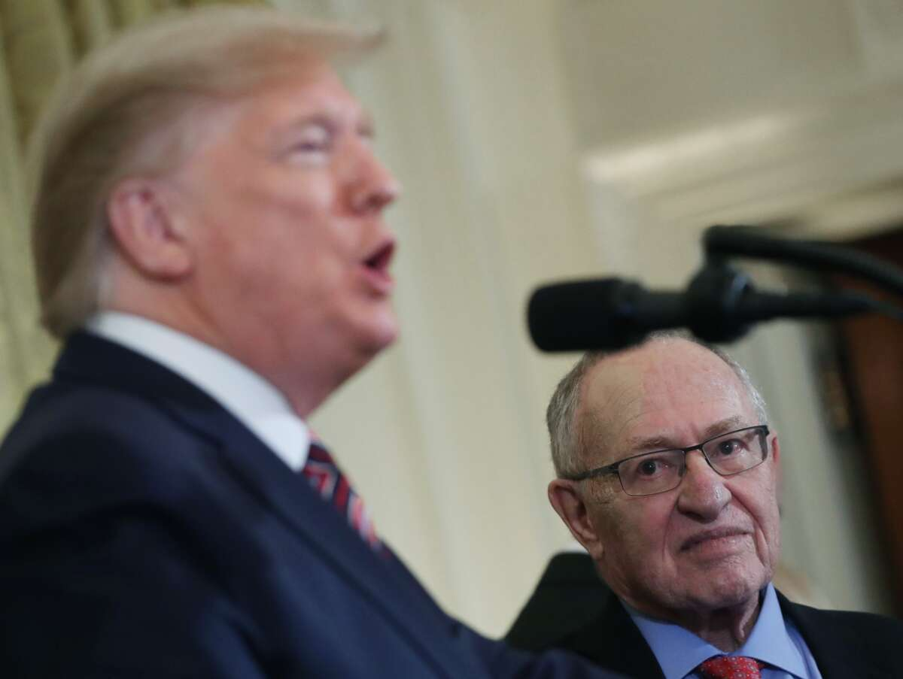
trump-dershowitz.png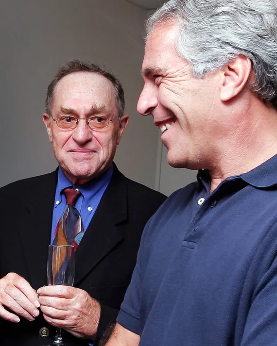
dershowitz-epstein.pngCritics argue that Alan Dershowitz—one of Donald Trump’s most prominent legal defenders—appears extensively in Jeffrey Epstein–related court records and public reporting. Dershowitz served as a key legal advisor to Trump and was part of Trump’s defense team during his first impeachment trial in 2020, frequently appearing in media as a vocal supporter.
Epstein-related allegations and records
Dershowitz has been named in multiple Epstein-related documents, most notably in allegations by Epstein survivor Virginia Giuffre, who claimed she was directed by Epstein to have sex with Dershowitz while she was underage. Dershowitz has consistently and forcefully denied the allegation.
In 2022, Giuffre publicly retracted her accusation as part of a settlement, stating she may have made a mistake regarding Dershowitz. No criminal charges were brought against him in connection with Epstein, and he has never been convicted of any Epstein-related offense.
Separately, flight logs show Dershowitz traveled multiple times on Epstein’s private plane, and emails and testimony in civil litigation place him within Epstein’s social and legal inner circle during the period when Epstein was under federal investigation.
Why critics consider this relevant
Critics argue that Dershowitz’s proximity to Epstein—combined with his later role as one of Trump’s most visible legal champions—adds to concerns about the broader ecosystem of elites surrounding Trump who intersected with Epstein. While association alone is not proof of wrongdoing, skeptics contend that repeated overlap between Trump allies and Epstein-linked figures raises legitimate questions about judgment and accountability.
Supporters counter that Dershowitz has been exonerated by the retraction, that no charges were ever filed, and that his impeachment role reflects his constitutional-law expertise rather than any connection to Epstein.
Steve Bannon controversies and Epstein-file communications
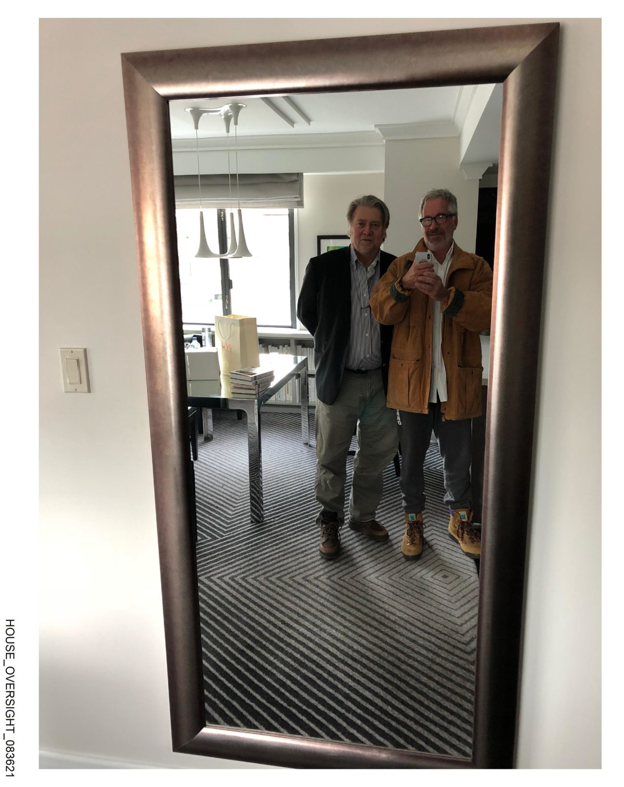
bannon.png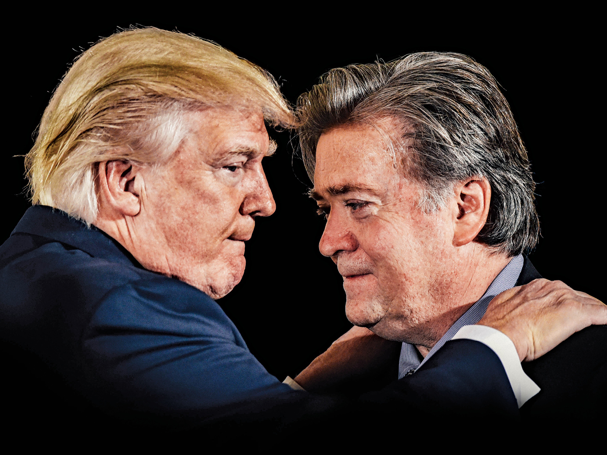
trump-bannon.pngCritics argue that Steve Bannon—Donald Trump’s former chief White House strategist and a central figure in Trump’s 2016 campaign—appears in reporting connected to both disturbing personal allegations and extensive communications with Jeffrey Epstein after Epstein’s 2008 conviction.
Epstein-file communications
Court records and reporting show that Bannon exchanged hundreds of texts and emails with Jeffrey Epstein between 2017 and 2019, well after Epstein’s conviction for soliciting a minor. The communications reportedly included discussions of U.S. politics, Trump administration matters, and a proposed documentary project aimed at rehabilitating Epstein’s public image.
Reporting also indicates Bannon discussed logistical assistance with Epstein, including references to using Epstein’s private aircraft. Critics argue that Bannon’s willingness to engage closely with Epstein—despite Epstein’s widely known criminal history—raises serious questions about judgment and elite networking norms. Supporters counter that communication alone does not imply criminal involvement.
Florida house allegations (unproven)
Separately, allegations have circulated in alternative and tabloid-style reporting regarding a Florida property connected to Bannon’s ex-wife, where witnesses alleged the house was used for drug use and the filming of pornographic material. Some accounts go further, alleging involvement of underage individuals.
Important context: These claims have not resulted in criminal charges against Bannon, are not substantiated by court convictions, and are primarily sourced from witness statements and non–top-tier outlets. They are included here because they circulate widely in discussions of Trump-adjacent figures and contribute to the broader perception critics describe as “everything around this ecosystem feels compromised.”
Why critics consider this relevant
Critics argue that the combination of Epstein communications, alleged attempts to manage Epstein’s reputation, and unresolved scandal narratives around Bannon reinforce concerns about a culture of moral indifference among powerful figures surrounding Trump. Supporters respond that none of this constitutes proof of wrongdoing and reflects guilt-by-association reasoning.
- PBS NewsHour: Overview of Epstein files and associated figures (includes Bannon context)
- PBS NewsHour: Unsealed Epstein documents and communications
- CBS News: Epstein files release live updates (general context)
- Washington Post: Epstein documents detailing communications with Bannon
- American Journal: Witness allegations regarding Florida property (note: non–top-tier outlet)
Melania Trump’s Modeling Past
melania-modeling.png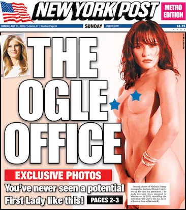
melania-modeling2.pngmelania-modeling3.pngMelania Trump’s modeling history included provocative published work that resurfaced during the 2016 campaign. This point is often raised in “values vs image” debates, not as an allegation of illegality.
Brett Ratner, the Melania documentary, and overlap with Trump- and Epstein-adjacent networks
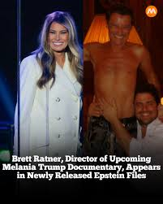
brett-ratner.png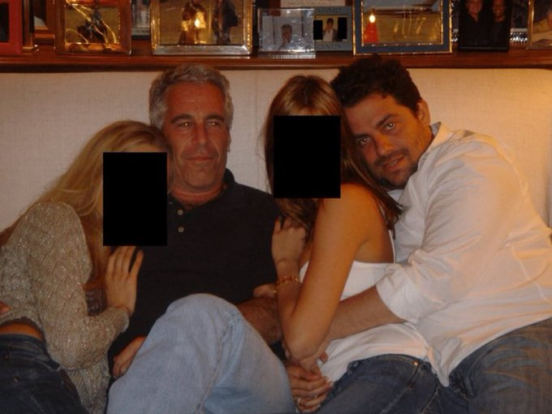
brett-ratner2.pngCritics argue that Brett Ratner—whose Hollywood career stalled after multiple sexual-misconduct allegations in 2017 (which he has denied)— returned to prominence by directing and producing a documentary centered on Melania Trump in the lead-up to Donald Trump’s second inauguration.
Documentary project (reported)
- Reporting described an Amazon MGM Studios–backed documentary about Melania Trump directed by Ratner, with a reported licensing figure and broad distribution plan.
- Coverage has characterized the film as largely promotional, focusing on public-facing routines and image management rather than investigative detail.
Trump-world connections critics highlight
- Production-finance ties: Ratner co-founded RatPac and participated in film-financing partnerships that included Trump-era Treasury Secretary Steven Mnuchin’s Dune Entertainment (RatPac-Dune).
- Comeback vehicle reporting: Entertainment reporting has described plans for a Ratner-directed Rush Hour 4 and framed the effort as a high-profile comeback after the 2017 allegations.
Epstein-file references (association context)
Ratner has also been discussed online in connection with document/photo releases commonly referred to as the “Epstein files,” including images and email/social-circle references. No allegation of wrongdoing is asserted here based on those mentions; the point is the recurring pattern of elite-network overlap that critics argue “is concerning” optics.
Why critics consider this relevant
Critics argue that Ratner’s return via a Trump-family project, paired with business ties to Trump-era figures and periodic Epstein-file adjacency, reinforces the perception that reputational exile is reversible for well-connected insiders—especially in media ecosystems that reward loyalty and access.
- Variety: Amazon MGM Studios Melania documentary (Ratner directing; reported licensing figure)
- The Hollywood Reporter: Brett Ratner to direct Melania Trump documentary for Amazon
- Wikipedia: RatPac Entertainment / RatPac-Dune partnership (Mnuchin/Dune connection indexing)
- The Hollywood Reporter: “Rush Hour 4” comeback reporting involving Ratner
- Air Mail: discussion of Peggy Siegal emails in Epstein-file releases (secondary reporting)
Trump Family History: Grandfather’s Brothel Business
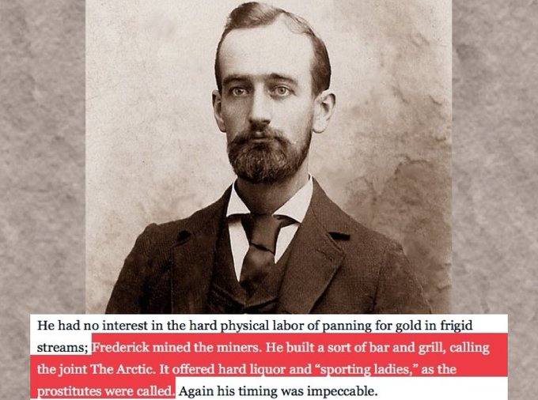
trump-grandfather.pngHistorical reporting describes Donald Trump’s grandfather Frederick Trump operating a Gold Rush-era establishment that included prostitution services, later cited as an early source of family wealth.
Scope and uncertainty: Historical accounts generally describe Trump’s grandfather as operating restaurants and hotels in red-light districts where prostitution and gambling were common. The strongest documentary evidence typically cited is circumstantial (location, ads, and contemporary descriptions), and some popular claims circulate in exaggerated form.
Klondike-era business model: Snopes and other summaries of the historical record describe Frederick Trump as opening and operating the Arctic Restaurant and Hotel (also described as “New Arctic”) during the Klondike Gold Rush period, and note contemporaneous/near-contemporaneous accounts suggesting that prostitution may have occurred there, alongside liquor sales and other vice economy activity typical of boomtowns.
Bottom line: The best-supported version of the claim is that Frederick Trump ran successful hospitality businesses in vice-heavy districts and may have profited indirectly from prostitution being available on or near the premises; the more extreme “pimp/opium den” narratives are not supported by the available evidence.
Vince McMahon, WWE showmanship, political alliance—and McMahon’s own misconduct allegations
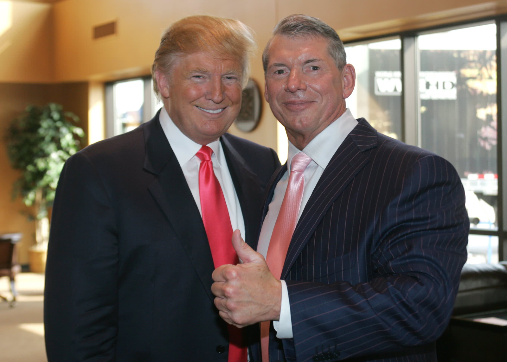
vince-mcmahon-donald.png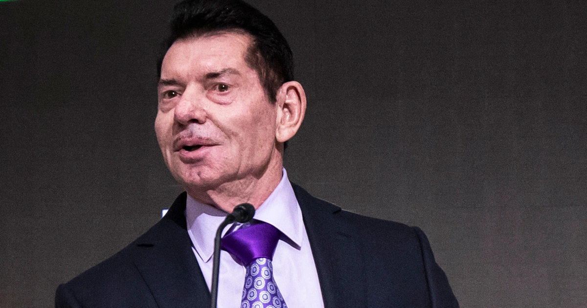
vince-mcmahon.pngCritics argue that Donald Trump has had a long personal and professional relationship with WWE executive Vince McMahon that blends entertainment branding with political messaging. Trump’s Atlantic City properties were promoted in connection with major WWE events in the late 1980s, and Trump later participated directly in WWE storylines—including the widely covered 2007 “Battle of the Billionaires” angle with McMahon. Commentators have argued that professional-wrestling style spectacle (villains, heroes, crowd work, kayfabe-adjacent messaging) overlaps with the political persona Trump later developed.
Critics also argue that the relationship is not just cultural but financial and political. Reporting has described donations connected to the McMahon family to Trump-aligned efforts in the past, and Trump appointed Linda McMahon (Vince McMahon’s spouse and a longtime Trump ally) to senior government roles. Linda McMahon served as Administrator of the Small Business Administration in Trump’s first term and was later nominated and confirmed as Secretary of Education in Trump’s second term.
Finally, Critics argue that Vince McMahon himself has faced a long-running series of misconduct allegations and legal disputes connected to WWE, including (a) reports of undisclosed settlement payments and internal investigations, and (b) civil lawsuits alleging serious sexual misconduct and coercion. These matters remain contested in court and in public reporting; they are not criminal convictions. Still, critics argue that the proximity of Trumpworld to figures repeatedly accused of sexual misconduct contributes to the broader “pattern” concerns driving public distrust.
- Washington Post (Jul 2025) — WrestleMania IV context at/marketed with Trump Plaza era: coverage referencing the 1988 Atlantic City WrestleMania connection
- Wikipedia (background indexing for WWE appearances / storylines; verify details via primary reporting when possible): Battle of the Billionaires (WrestleMania 23) and Trump—WWE/Hall of Fame references
- U.S. Department of Education press release (Mar 3, 2025) — Linda McMahon confirmed as Secretary of Education: ED.gov announcement
- Congress.gov — confirmation record (vote and nomination details): PN11-10 (Secretary of Education nomination)
- Associated Press (Mar 3, 2025) — mainstream coverage of Linda McMahon’s confirmation and Trump’s stated goals for ED: AP: Senate confirms McMahon to lead Education Department
-
If you want an image that won’t crowd text: keep it in this
<figure>block only, and use a wide image (landscape) so it scales cleanly.
The full landscape of sexual-misconduct allegations against Donald Trump
This section consolidates publicly reported allegations of sexual misconduct made against Donald J. Trump over several decades. The list below is drawn primarily from mainstream reporting and court records. Inclusion here does not assert guilt in any individual case. Where applicable, outcomes (lawsuits, settlements, verdicts, withdrawals, or denials) are noted.
The purpose of presenting the full scope is contextual: critics argue that the volume, time span, and recurring themes (“unwanted touching,” “forced kissing,” pageant-related boundary violations, and later defamation findings) are relevant to public trust—especially in light of Epstein-adjacent concerns discussed elsewhere on this page.
- Jessica Leeds (early 1980s): Alleged groping during a flight. Publicized in 2016; no lawsuit. Trump denied the claim.
- Ivana Trump (1989): Alleged sexual assault described in a divorce deposition; later clarified she did not intend a criminal meaning, while standing by the description in her memoir. Divorce settled; no charges. Trump denied wrongdoing.
- Jill Harth (1992): Alleged unwanted sexual advances at Mar-a-Lago. Filed a 1997 lawsuit; business claims settled, harassment claim withdrawn. Trump denied allegations.
- Stacey Williams (1993): Alleged groping in Trump Tower with Jeffrey Epstein present. Publicized in 2024; no lawsuit. Trump denied it.
- Beatrice Keul (1993): Alleged groping at the Plaza Hotel. Publicized in 2024; no lawsuit. Trump denied it.
- “Katie Johnson” / Jane Doe (1994): Anonymous allegation of rape at age 13 at an Epstein-associated residence. Lawsuits filed and withdrawn in 2016 amid reported threats; claims linked to controversial promoters. Trump denied it.
- E. Jean Carroll (1995–1996): Alleged rape in a Bergdorf Goodman dressing room. In 2023, a jury found Trump liable for sexual abuse and defamation; additional defamation damages awarded in 2024. Trump denied the allegation; appeals were denied.
- Lisa Boyne (1996): Alleged Trump encouraged models to walk on tables so he could look up their skirts. No lawsuit.
- Temple Taggart McDowell (1997): Alleged unwanted kissing during Miss USA pageant events. No lawsuit.
- Amy Dorris (1997): Alleged groping and forced kissing at the U.S. Open. No lawsuit.
- Cathy Heller (1997): Alleged unwanted kiss at Mar-a-Lago. No lawsuit.
- Karen Johnson (1997): Alleged groping at a Mar-a-Lago party. No lawsuit.
- Karena Virginia (1998): Alleged breast grab after the U.S. Open. No lawsuit.
- Kristin Anderson (early 1990s): Alleged groping at a nightclub. No lawsuit.
- Pageant dressing-room allegations (1997–2006): Multiple Miss Teen USA and Miss USA contestants alleged Trump entered dressing rooms while they were undressed. Trump acknowledged similar behavior in a 2005 radio interview, later disputing details.
- Mindy McGillivray (2003): Alleged buttocks grab at Mar-a-Lago. No lawsuit.
- Rachel Crooks (2005): Alleged unwanted kissing in Trump Tower elevator. No lawsuit.
- Natasha Stoynoff (2005): Alleged forced kiss during an interview at Mar-a-Lago; witnesses corroborated proximity. No lawsuit.
- Juliet Huddy (2005–2006): Alleged unwanted kiss in an elevator. No lawsuit.
- Jessica Drake (2006): Alleged unwanted kissing and advances at a golf event. No lawsuit.
- Ninni Laaksonen (2006): Alleged groping before a television appearance. No lawsuit.
- Summer Zervos (2007): Alleged unwanted advances; filed a defamation suit in 2017 after Trump denied claims; suit withdrawn in 2021.
- Cassandra Searles (2013): Alleged fondling at Miss USA pageant events. No lawsuit.
- Alva Johnson (2016): Alleged forced kiss at a campaign rally; lawsuit filed and later dismissed.
- Unnamed Mar-a-Lago employee (2019): Alleged assault; no lawsuit.
- Access Hollywood tape (2005, released 2016): Trump recorded bragging about non-consensual touching. He later called it “locker room talk.”
- Stormy Daniels (2006): Alleged affair; hush-money payment led to Trump’s 2024 felony conviction for falsifying business records.
- Karen McDougal (2006): Alleged affair; payment arranged via tabloid publisher. Trump denied relationship.
- Wikipedia: Consolidated allegation index (used here as a navigation hub to primary reporting)
- Associated Press: E. Jean Carroll verdict coverage
- Washington Post: Defamation damages ruling
- DOJ / SDNY: Business records conviction summary
This section is intentionally exhaustive rather than selective. Supporters may dispute interpretations or credibility; critics argue that repetition, corroboration patterns, and court outcomes are themselves relevant facts.
Donald Trump’s criminal convictions
This section summarizes the criminal convictions of Donald J. Trump as they stand as of February 2026. Unlike allegations or civil findings discussed elsewhere on this page, the facts below reflect a completed criminal trial, jury verdict, and entered judgment.
The New York hush-money case
On May 30, 2024, Donald Trump was convicted by a Manhattan jury of 34 felony counts of falsifying business records in the first degree under New York Penal Law § 175.10 (People v. Donald J. Trump).
The charges stemmed from a scheme to conceal a $130,000 payment made to adult film actress Stormy Daniels shortly before the 2016 presidential election. Prosecutors demonstrated that Trump, through his then-attorney Michael Cohen, reimbursed the payment using a series of checks and internal accounting entries falsely labeled as “legal expenses.” The state argued—and the jury agreed—that these falsifications were intended to conceal an unlawful effort to influence the election.
Trial details
- Court: New York Supreme Court, Manhattan
- Presiding judge: Justice Juan Merchan
- Trial dates: April 15 – May 30, 2024
- Jury deliberation: Approximately 9.5 hours
- Verdict: Guilty on all 34 felony counts
Sentencing
On January 10, 2025—shortly before Trump’s second inauguration—Judge Merchan imposed an unconditional discharge. This sentencing outcome leaves the felony convictions intact on Trump’s criminal record but imposes no incarceration, fines, probation, or supervision.
The court cited constitutional and practical concerns associated with sentencing a sitting or incoming president, not a finding of innocence or legal error.
Current legal status
As of early 2026, the convictions remain in force. Trump has pursued multiple appeals and procedural challenges, including efforts to remove the case to federal court and arguments invoking presidential immunity. Courts have thus far declined to overturn the verdict or vacate the judgment, citing timing issues and the non-official nature of the conduct.
No appellate court has reversed or nullified the convictions to date.
- Associated Press: Jury convicts Trump on 34 felony counts
- New York Times: Verdict coverage and legal analysis
- Washington Post: Sentencing and unconditional discharge explanation
- DOJ / SDNY: Official case summary
This section addresses criminal convictions only. Civil judgments, allegations, and uncharged conduct are documented elsewhere on this page and are not part of this conviction summary.
Trump’s closeness with Kid Rock (and those lyrics)
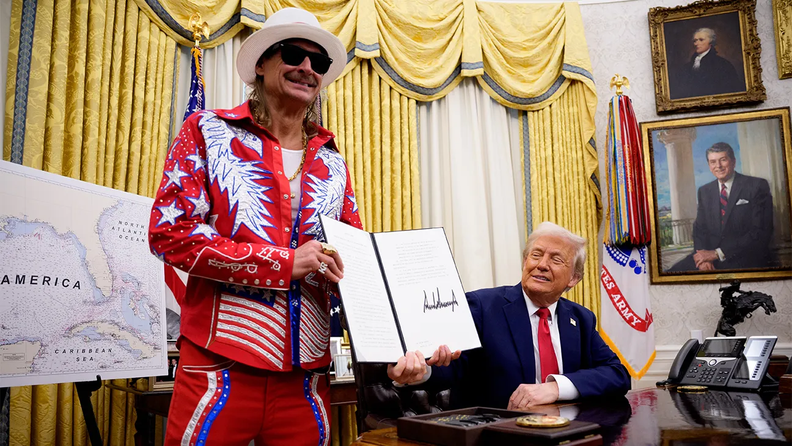
trump-kid-rock.png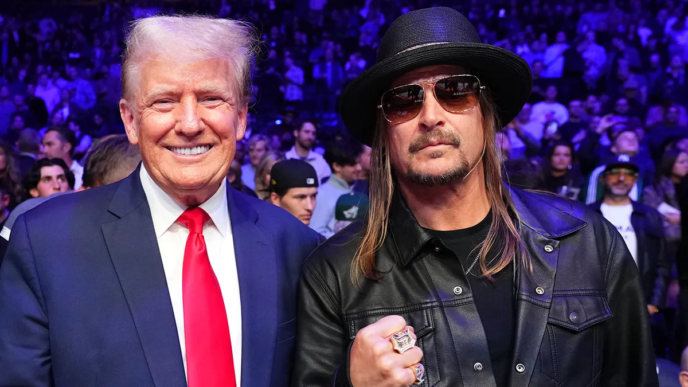
trump-kid-rock2.png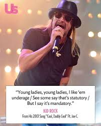
kid-rock-lyrics.pngCritics argue that Trump counts rock musician Kid Rock among his friends and has praised him publicly. This association drew criticism when lyrics resurfaced from a 2001 Kid Rock song boasting “I like ’em underage, see… Some say that’s statutory, but I say it’s mandatory.” Trump’s warm endorsement of Kid Rock—despite those lyrics—adds to the broader discomfort some people already feel about the environments Trump chooses to normalize.
Pageant ties with John Casablancas and teen models
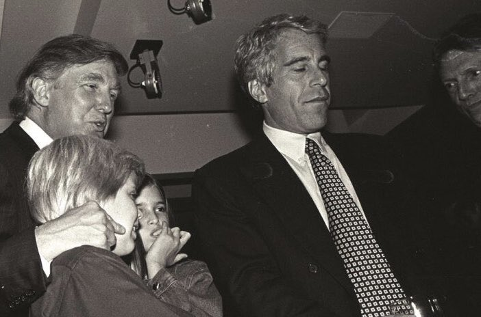
trump-john-casablancas.png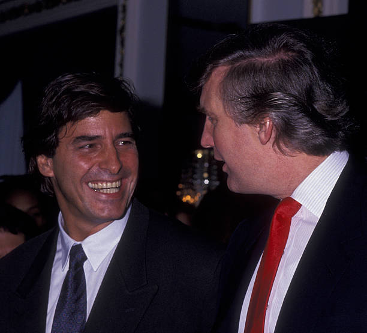
trump-john-casablancas2.pngCritics argue that Trump partnered with John Casablancas—the Elite Model Management founder later accused of exploiting underage models— around teen beauty-pageant environments. Reporting describes Trump sponsoring and judging Casablancas’s “Look of the Year” contest, including events involving contestants as young as 14 and social access to powerful men. Even if a given setting doesn’t prove wrongdoing by Trump, critics argue that repeatedly choosing those environments, and those partners, is concerning.
“Ambrosia,” blood-transfusion culture, and Epstein-adjacent weirdness
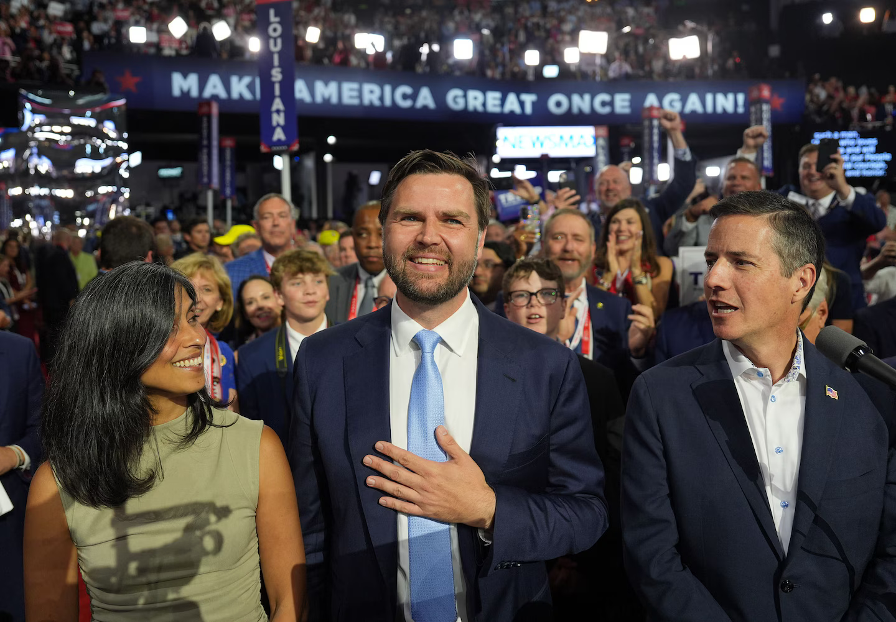
vance-thiel.pngCritics argue that J.D. Vance is discussed in the same online orbit as Peter Thiel’s interest in a company called Ambrosia, known for marketing “young plasma” transfusions for anti-aging. Critics also argue that Epstein’s world is filled with bizarre elite medical obsession themes in the public imagination, making “blood” references in any related scandal feel instantly darker to the average reader—even when the connections are indirect.
- The Guardian (Jan 4, 2017): Ambrosia “young blood” profile
- CBS News: Epstein files release live updates (general context)
- X.com: post circulating a purported Epstein-files excerpt about wanting blood (social media link)
- X.com: post circulating a purported Epstein-files excerpt mentioning Peter Thiel (social media link)
Alexander Acosta’s Epstein Plea Deal and Trump’s Administration
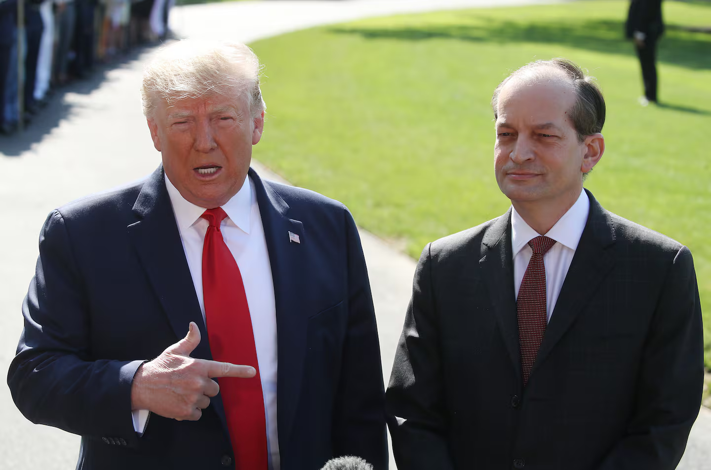
trump-acosta.pngCritics argue that critics point to institutional crossover between Epstein-linked decision-makers and Trump’s administration or orbit, most prominently via Alexander Acosta’s role in Epstein’s plea deal before becoming Trump’s Labor Secretary. Even when the connection is “administrative” rather than personal, the optics are brutal: the most famous “why was Epstein protected?” plea deal sits adjacent to Trump’s cabinet.
One of the most controversial links between Trump’s orbit and Epstein was through Acosta, whom Trump appointed as U.S. Labor Secretary in 2017. Acosta had served as the U.S. Attorney for Southern Florida in 2007–2008 and approved Epstein’s non-prosecution agreement for federal sex crime charges. In 2019, amid renewed scrutiny after Epstein’s re-arrest, Acosta resigned.
“The Devil’s Advocate” filmed in Trump’s penthouse
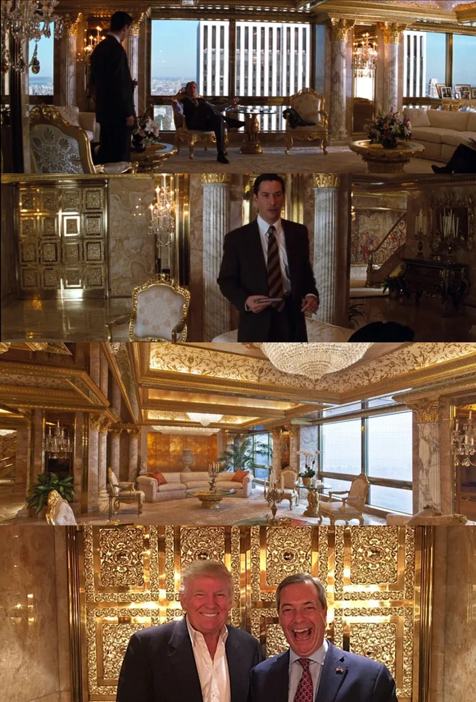
devils-advocate-al-pacino-trumps-home.png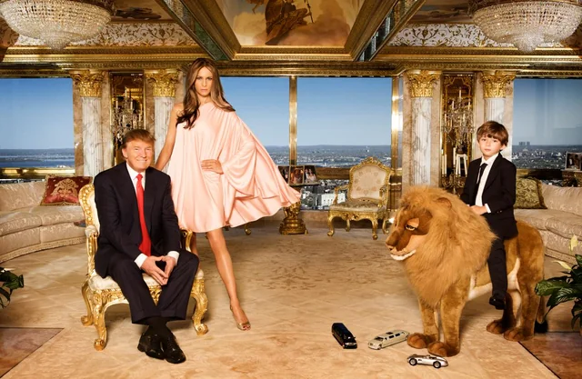
trump-in-penthouse.png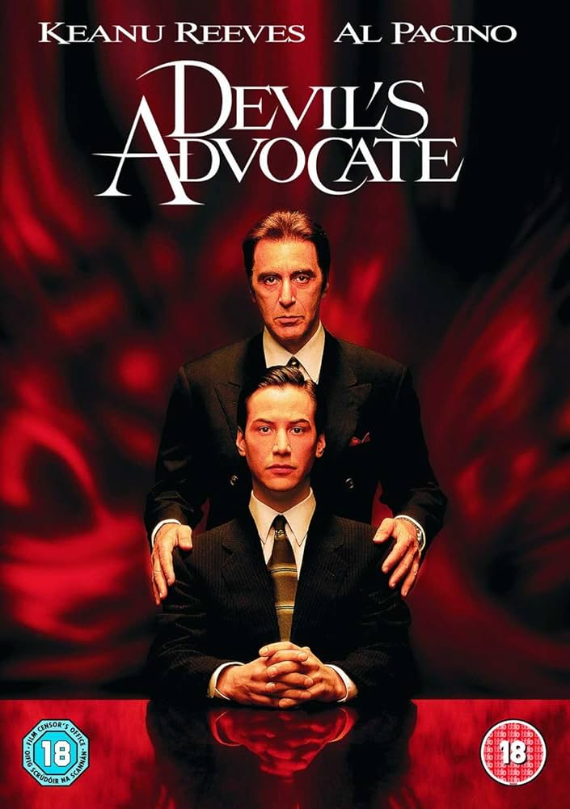
devils-advocate-poster.pngCritics argue that pop culture leaned into the symbolism: the film The Devil’s Advocate used Trump’s own penthouse for scenes tied to Al Pacino’s character (the Devil). That’s not evidence of anything criminal, but it’s the kind of cultural detail that critics cite as “the vibe is off” when they talk about why Trump triggers suspicion.
Trump’s comments about Ivanka
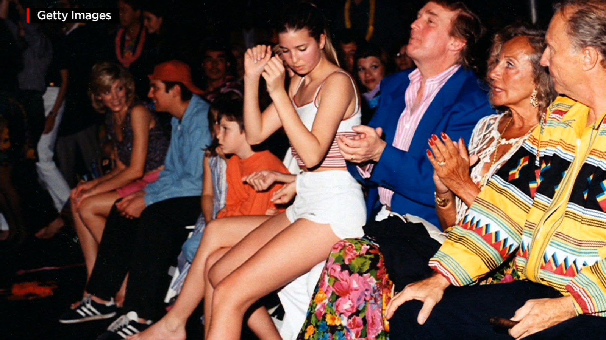
trump-ivanka.png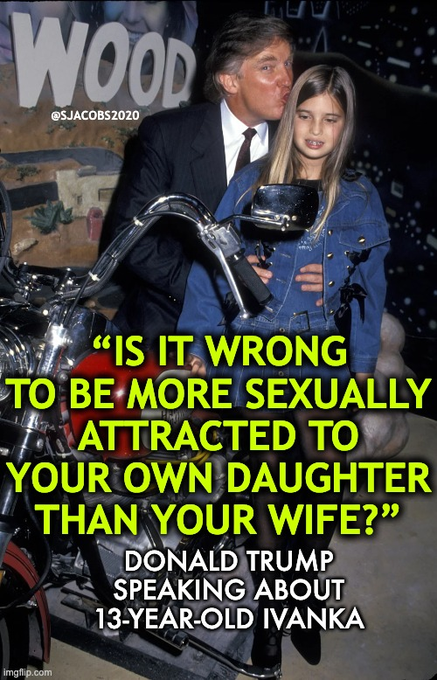
trump-ivanka2.png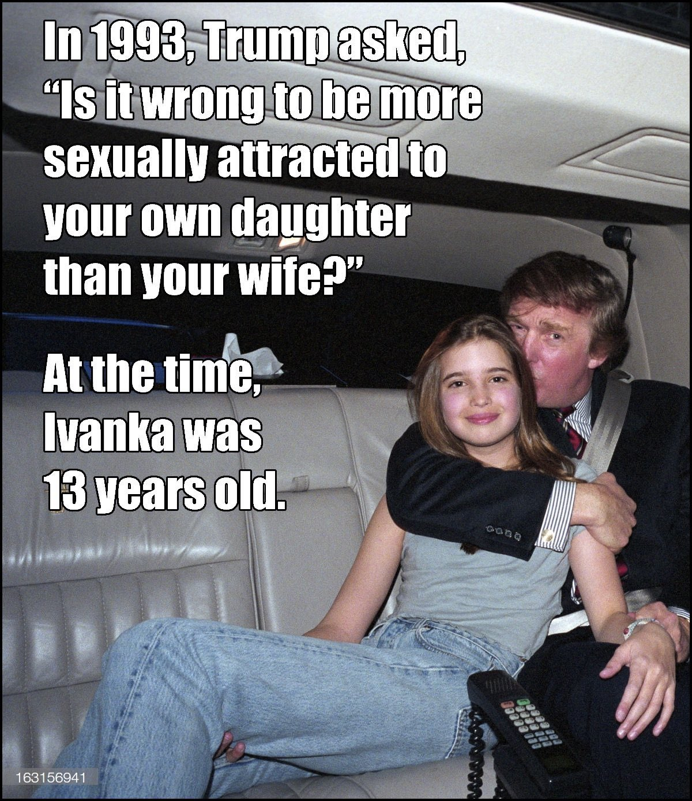
trump-ivanka3.pngCritics argue that Trump has repeatedly made remarks about his daughter Ivanka that many people interpret as sexualizing or objectifying. Critics argue that even if framed as “jokes,” the pattern is abnormal and reinforces discomfort, especially in a broader context where youth/sexual boundaries are already central to the Epstein story.
Erika Kirk (Frantzve), Romania charity work, and the Otto Busher association (rumor + allegation context)
Erika Kirk (formerly Erika Frantzve), linked in public attention to Turning Point USA via her marriage to Charlie Kirk, has faced scrutiny related to her past humanitarian work in Romania through her nonprofit Everyday Heroes Like You and its Romanian Angels initiative. The program reportedly operated around 2011–2013 and described its mission as delivering aid (e.g., gifts and supplies) to children in Romanian state orphanages and placement centers, including in and around Constanța. Supporters describe this as straightforward charity work; critics argue that the setting and relationships involved make it “suspect,” even if no proven wrongdoing is established.
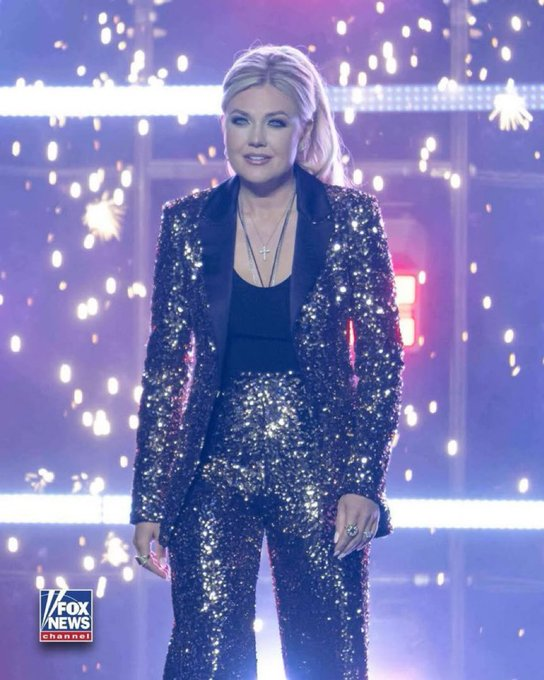
erika-kirk.png1) Claimed link between Kirk and Col. Otto A. Busher III
Critics point to promotional materials and social posts from the 2011–2012 period in which Kirk allegedly thanked Col. Otto A. Busher III, described in online commentary as a senior U.S. Army commander associated with the Mihail Kogălniceanu Air Base (MKAB) near Constanța, for logistical support (access, transport, coordination) related to charity visits. Critics argue that, because the work involved vulnerable children and a high-risk trafficking environment, this collaboration creates reputational risk—at minimum as “bad optics,” and at maximum as grounds for suspicion (even if no direct evidence implicates Kirk in wrongdoing).
2) Trafficking/exploitation allegations against Busher (as circulated online)
The core suspicion narrative hinges on allegations that Busher and associates were involved in trafficking and exploitation tied to MKAB. As summarized in online threads, these allegations are often attributed to a 2019 affidavit/complaint said to have been submitted to Romania’s DIICOT by whistleblower Ana-Maria Nuciu (described online as a former U.S. Army translator at MKAB from 2008–2014). The allegation set commonly includes claims of a prostitution/trafficking operation on or around the base during roughly 2010–2015, including claims that minors were involved. Public online summaries also claim Romanian investigations were limited by jurisdictional barriers on base property and that no criminal charges resulted. These claims are widely repeated but should be treated as allegations unless you can link the underlying document(s) directly.
3) Timeline overlap and broader Romania context used by critics
Critics emphasize that the peak period of Romanian Angels activity (commonly stated as 2011–2012) overlaps with the alleged start of the trafficking operation timeline (often stated as beginning around 2010). They also point to Romania’s documented history of child exploitation in orphanage systems to argue that any charity work involving institutionalized children requires extraordinary safeguards and transparency.
4) Why critics describe the association as “suspect”
- Proximity narrative: Working with a commander later accused online of trafficking activity is treated as “guilt-by-association,” especially given the involvement of vulnerable children and an area described as high-risk.
- Pattern claims: Critics often connect the Romania story to broader “elite network” theories (pageants, politics, donors, or unrelated scandals). These broader linkages are typically speculative and should be labeled as such.
- Transparency criticism: Critics argue that public explanations from Kirk have been limited, and that the re-circulation of documents/threads spikes when her public profile rises.
- Rumor amplification: Separate viral claims (e.g., “banned from Romania”) are frequently repeated; mainstream fact-checking coverage has described some of these claims as unsupported.
Counterpoints and limits
The central limitation is straightforward: no court judgment, arrest record, or official finding is presented here as directly linking Erika Kirk to trafficking. Much of the suspicion relies on (1) alleged promotional “thank you” materials, (2) a whistleblower affidavit described in online threads, and (3) inference from geographic/timeline overlap. Readers should treat this as inferred risk and reputational critique—not proven guilt.
- Primary materials: Add links to the original charity promo video/posts (if available), plus any direct documentary evidence of the “thank you” reference. (Example: Vimeo/YouTube link to the exact promo video; archived page links.)
- Affidavit / complaint: If you have the DIICOT filing or a verifiable copy, link it directly (PDF scan or a reputable repository). If you only have screenshots, label them clearly as screenshots and state what you can’t independently verify.
- Fact-check coverage: Keep links to mainstream debunks where relevant (e.g., “banned from Romania” claims).
- Rumor ecosystem example (X): X thread example used to illustrate circulating claims
How Trump personally profited while his Atlantic City casinos went bankrupt
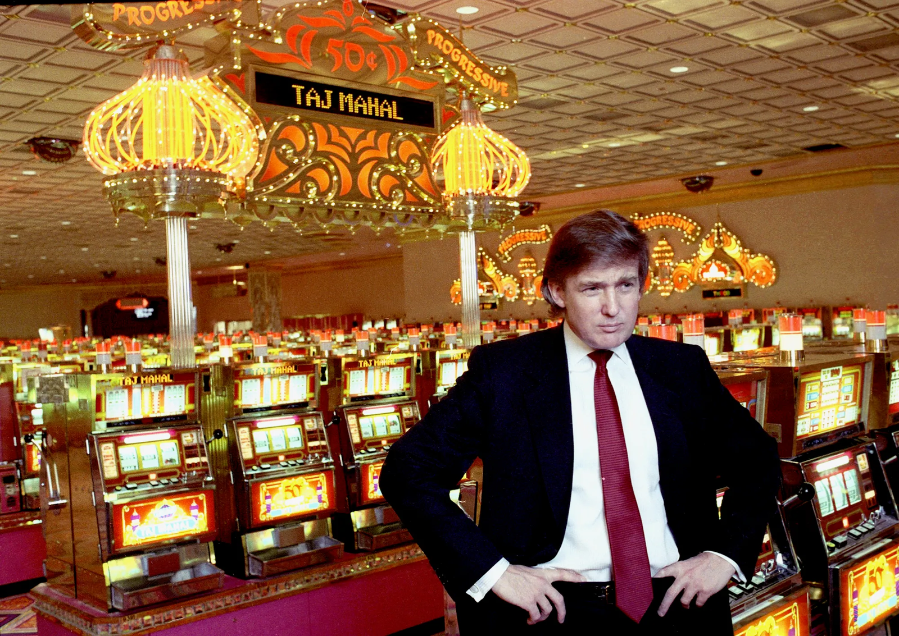
trump-casino.pngCritics argue that Donald Trump repeatedly cited his Atlantic City casino bankruptcies as evidence of business savvy, while detailed reporting shows that Trump personally made substantial money even as the casino companies themselves collapsed, investors lost billions, contractors went unpaid, and thousands of workers were affected.
Between 1991 and 2009, Trump-affiliated casino companies filed for Chapter 11 bankruptcy protection at least six times, primarily involving:
- Trump Taj Mahal (1991)
- Trump Plaza Hotel and Casino (1992)
- Trump Castle Hotel and Casino (1992)
- Trump Hotels & Casino Resorts (2004)
- Trump Entertainment Resorts (2009)
- One additional related restructuring filing
These bankruptcies were driven by heavy leverage (often via high-interest junk bonds), declining Atlantic City revenues, increased regional competition, and operational losses. Public filings and press coverage describe billions of dollars in cumulative losses, with bondholders, investors, contractors, and employees absorbing the damage.
How Trump still made money
Despite the failures of the casino entities, Trump personally profited through several well-documented mechanisms:
- Salary, bonuses, and management fees: As chairman and CEO of Trump Hotels & Casino Resorts, Trump collected large annual compensation packages. Reporting shows that across the lifespan of the company—despite losses exceeding $1 billion—Trump received an estimated $80+ million in salary, bonuses, jet usage fees, and payments for licensing his name. Notably, his base salary increased after one bankruptcy filing.
- Shifting personal debt onto the companies: During the early 1990s, Trump negotiated restructurings that moved hundreds of millions of dollars of personal liabilities onto the casino corporations, significantly reducing his own exposure while creditors took losses.
- Asset transfers and self-dealing structures: Trump sold casino assets to publicly traded Trump entities at prices critics described as inflated, collecting fees and cash while transferring risk and debt to shareholders and bondholders.
- Tax advantages: Massive reported losses—including a $916 million net operating loss disclosed in the mid-1990s— allowed Trump to offset income for years, potentially avoiding federal income taxes while continuing to earn money elsewhere.
Trump’s defense vs. critics’ view
Trump has repeatedly argued that these bankruptcies represent a legitimate and “smart” use of U.S. bankruptcy law, allowing him to restructure debt, protect jobs, and exit a declining market profitably. He has publicly stated that he “made a lot of money” in Atlantic City and considers the outcomes a success.
Critics counter that this framing ignores who paid the price: investors whose bonds became nearly worthless, contractors who were left unpaid or underpaid, workers who lost jobs or benefits, and a city already in economic decline. From this perspective, Trump’s strategy is seen less as entrepreneurial brilliance and more as a pattern of using other people’s money to shield himself from downside risk while extracting personal gain.
- Bloomberg: How Trump made millions while Atlantic City casinos failed
- New York Times: Trump’s reported $916 million loss and tax implications
- Washington Post Fact Checker: Trump bankruptcies explained
- Fortune: Trump’s Atlantic City casino record
- Mother Jones: Who lost when Trump’s casinos collapsed
- SEC filings and bankruptcy court records for Trump Hotels & Casino Resorts (1990s–2009)
Trump University and crypto controversies
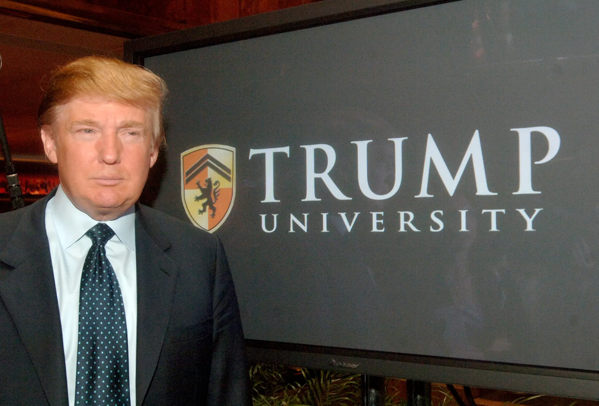
trump-university.pngCritics argue that Trump University ended in a major settlement after fraud allegations, Critics also argue that critics argue newer crypto ventures look like opportunistic cash-grabs. Supporters may view these as aggressive business moves, while critics view them as part of a pattern: hype, extraction, and leaving others holding the bag.
Trump University: marketing claims, pricing tiers, and fraud allegations
Trump University (also known as the Trump Entrepreneur Institute) marketed itself as a real-estate education program that promised access to Trump’s “secrets” and to “handpicked” experts. The New York Attorney General alleged it was an unlicensed institute that used deceptive advertising to drive people into free workshops and then pressure them into increasingly expensive products.
Alleged bait-and-switch structure (NY AG): The NY AG described a funnel where attendees were steered from a free workshop into a $1,495 three-day seminar, and then pitched “Elite” mentorship packages priced from $10,000 to $35,000. The filing alleged that instructors encouraged attendees to raise credit-card limits during breaks, and that the “handpicked” instructor claims were false.
Alleged misrepresentations (NY AG): The NY AG alleged Trump University used “university” branding without the required charter/license in New York, used a university-like seal and completion certificates, and promised specific training/support that many customers said they did not receive. The NY AG sought restitution for more than 5,000 consumers and alleged losses of over $40 million.
Settlement and court outcomes: Trump ultimately agreed to a $25 million settlement to resolve multiple cases without admitting wrongdoing. Federal reporting later described a court approval process and an appeals-court decision allowing the settlement to move forward.
Crypto: $TRUMP memecoin “pay-for-access” optics and regulatory/conflict concerns
In Trump’s second term, critics argue that Trump-aligned crypto ventures create conflicts of interest because they blend presidential access, branding, and policy decisions affecting crypto oversight. The Guardian reported that a May 2025 dinner and White House tour for top purchasers of the $TRUMP memecoin was designed to spur purchases and generated about $148 million, including from anonymous and foreign buyers.
The Guardian also reported that Trump’s family and close allies promoted a separate crypto venture, World Liberty Financial (WLF), and described watchdog and scholar warnings that deregulatory moves (at DOJ/SEC and elsewhere) compound perceived conflicts when paired with personal crypto profit.
$MELANIA: lawsuit allegations about pump-and-dump mechanics (as reported)
Separately, WIRED reported on an amended filing in a federal class-action suit alleging that a network of defendants used public-figure branding in memecoin launches, including $MELANIA, as part of a repeatable “pump-and-dump” playbook. WIRED’s reporting emphasized the filing does not allege wrongdoing by Melania Trump.
Other Trump-branded ventures critics cite as a pattern (selected examples)
Beyond Trump University and crypto, critics often point to other Trump-branded ventures and endorsements as a recurring pattern: heavy marketing around Trump’s name, consumers or partners taking losses, and disputes ending in litigation or shutdowns. This section is intentionally selective and limited to examples that are well-documented in major reporting or official filings.
- Trump Foundation (NY AG enforcement): New York’s attorney general filed suit alleging persistent legal violations, including unlawful political coordination and self-dealing transactions, and later announced a stipulation to dissolve the foundation under judicial supervision.
- The Trump Network (health/MLM branding): STAT reported on Trump’s branding relationship with a network-marketing health-products business and the scientific criticisms raised about its testing/supplement claims, while describing Trump’s role as licensing/branding rather than product development.
- Trump Steaks (short-lived branded product line): NBC News reviewed the brief 2007 launch with Sharper Image and QVC and the later public disputes about whether “Trump Steaks” still existed as a product.
- Trump Vodka: Bloomberg documented the licensing venture’s marketing, operational problems, and eventual collapse in the U.S. market.
- ACN endorsement litigation (allegations): A federal class-action complaint alleged that Trump and family members promoted a multilevel-marketing “business opportunity” while making misleading claims and concealing financial ties; the allegations are contested and were litigated.
- Post-2020 monetization products: AP reporting on financial disclosures and Trump-business activity has described revenue streams from items like NFTs and Trump-endorsed products, and has also described how crypto ventures (including memecoins) can generate fees and raise conflict-of-interest concerns.
- Wall Street Journal: Trump University settlement
- New York AG (Aug 25, 2013): lawsuit press release alleging deceptive practices, pricing tiers, and unlicensed “university” branding
- NBC News (Feb 6, 2018): federal court approves Trump University settlement (describes merged cases)
- AP News (Feb 6, 2018): appeals court upholds settlement agreement
- ABC News (Mar 30, 2018): judge finalizes settlement (overview)
- The Guardian (June 17, 2025): $TRUMP coin reporting
- House Judiciary Committee Democrats staff report PDF: Trump, crypto, and corruption allegations (primary partisan document)
- House Judiciary Committee Democrats press release linking the staff report (context)
- WIRED: reporting on lawsuit allegations involving $MELANIA (notes no wrongdoing alleged by Melania Trump)
- New York AG (June 14, 2018): Trump Foundation lawsuit (allegations; $2.8M restitution sought; governance failures described)
- New York AG (Dec 18, 2018): stipulation dissolving Trump Foundation under judicial supervision
- STAT (Mar 2, 2016): Trump Network health-products/MLM reporting and scientific criticism context
- Courthouse News (Oct 2018): ACN class-action complaint summary (allegations; contested)
- NBC News (Mar 2016): Trump Steaks history and trademark/product status reporting
- Bloomberg (2016): Trump Vodka venture history
- AP News (June 2024): financial disclosures including Bible royalties and NFT licensing income
- AP News: reporting on Trump-family business monetization and memecoin/WLF conflict-of-interest concerns
Tabloids, pageants, and “catch-and-kill” politics
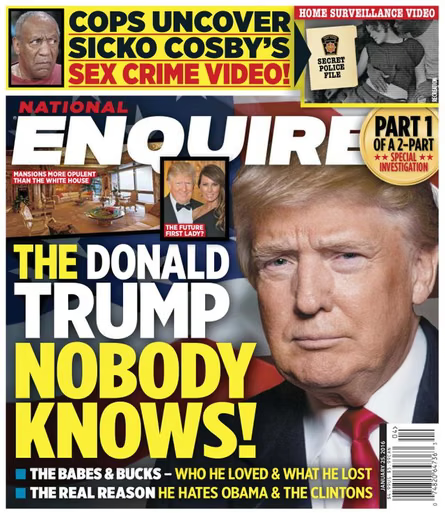
trump-tabloid.png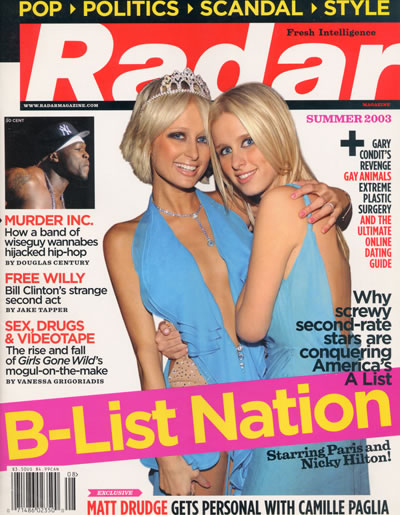
radar.pngCritics argue that Trump’s brand was built in a tabloid ecosystem, Critics also argue that “catch-and-kill” reporting emerged showing a tabloid publisher suppressing stories that could harm Trump. Critics also argue that multiple women described Trump walking into pageant dressing rooms, and audio exists of Trump talking about “inspecting” contestants. None of that proves Epstein-style crimes—but critics argue it does show a pattern of blurred boundaries around women and power.
Pageants and model-contest allegations: dressing rooms, recorded remarks, and related reporting
Recorded remarks (Howard Stern, 2005): In 2005 audio discussed in multiple outlets, Trump described going backstage at pageants he owned, saying contestants were sometimes “standing there with no clothes” and that he could enter because he was the owner and was “inspecting.”
Contestant accounts: Multiple former Miss USA and Miss Teen USA contestants have described Trump entering dressing-room areas while contestants were undressed. Coverage includes accounts from the 2001 Miss USA rehearsal context and reporting on the 1997 Miss Teen USA allegations.
1991 “Look of the Year” (Guardian reporting): The Guardian reported on Elite Model Management’s “Look of the Year” contests and related allegations, including that contestants were often teenagers (with reporting citing an average age around 15 in a 1992 Fox documentary), and describing allegations of exploitation in the wider ecosystem surrounding the contest and organizers. Trump was a judge in 1991.
Links to additional claims: Several widely shared social-media posts circulate additional first-person claims about Trump and pageants. Where these are not backed by mainstream reporting in the link itself, they are included as social-media references for readers to evaluate.
- X.com: Howard Stern clip post (social media link)
- X.com: post summarizing Guardian’s 1991 “Look of the Year” reporting (social media link)
- X.com: pageant-model claim post (social media link)
- X.com: additional pageant-related post (social media link)
Radar (magazine / Radar Online): Epstein financing and AMI-era Trump ties
Radar Online, a digital celebrity news site, has had—at various points in its history—ownership and editorial connections linked to individuals with close ties to Trump, particularly through American Media Inc. (AMI) and its former CEO David Pecker.
Why critics connect Radar to Epstein and Trump’s tabloid ecosystem: Contemporaneous reporting described Jeffrey Epstein as an early financier/investor in Radar magazine’s launch-era financing. Later, the RadarOnline brand sat within AMI’s tabloid portfolio under David Pecker—the same AMI umbrella that published the National Enquirer during the period when “catch-and-kill” operations were documented. In critics’ framing, this creates a single chain of proximity: Epstein near the early Radar brand financing; Pecker/AMI later controlling RadarOnline and the Enquirer; and AMI’s proven willingness to weaponize sensational stories (or suppress them) to shape political outcomes.
AMI ownership and “catch and kill”: Reporting describes RadarOnline.com as part of AMI’s tabloid portfolio for years. Pecker, a longtime friend of Trump, became central in reporting and court testimony about “catch and kill” practices—buying/suppressing stories to protect Trump.
Karen McDougal / story suppression: In this framing, Radar Online is discussed as part of the broader AMI ecosystem implicated in the McDougal hush-money narrative.
Story removal (April 2024): Politico reported that a Radar Online story tied to Karen McDougal was removed from the site during the 2024 hush-money trial news cycle.
Dylan Howard era: RadarOnline.com was later sold to a group associated with former AMI executive Dylan Howard, a figure discussed in multiple accounts of AMI’s most controversial editorial decisions related to Trump.
Initial launch financing (2004): Separate from the AMI/Trump tabloid period, contemporaneous reporting described Radar magazine’s financing as including Jeffrey Epstein. This predates RadarOnline’s AMI-era Trump nexus but is included because it places Epstein near the brand’s early funding and social milieu.
The National Enquirer / AMI: pro-Trump tabloid operations in 2015–2016
The National Enquirer and its former parent company, American Media Inc. (AMI), had deep ties to Trump, particularly around the 2016 election. Under then-CEO David Pecker (a longtime friend of Trump), reporting and court testimony described a pattern where the tabloid helped Trump by suppressing damaging stories while attacking political opponents.
“Catch and kill” tactics: Reporting and later enforcement actions describe AMI paying to acquire rights to negative stories about Trump with the intent to keep them from becoming public before the election.
McDougal and the doorman claim: The best-documented example is AMI’s $150,000 payment to Karen McDougal for her story. Separate reporting also described a $30,000 payment to a doorman who claimed Trump had an illegitimate child.
Smear campaigns: The Enquirer also published sensational and unsubstantiated attacks on Trump’s rivals (including Ted Cruz and Hillary Clinton) that Trump sometimes echoed publicly.
The broader tabloid incentive problem: Critics argue the AMI/Enquirer model shows how tabloids can operate as political tools: manufacturing scandal, laundering rumors into mass circulation, and pressuring or rewarding sources. In the same ecosystem, “catch-and-kill” functions as the inverse—buying up damaging information to prevent it from being published. In this framing, the issue is not just partisan bias but an information market built around leverage, smears, and selective suppression.
Legal consequences: AMI entered a 2018 non-prosecution agreement and later faced election-law enforcement consequences; the FEC fined AMI’s successor company $187,500 related to the McDougal payment and suppression decision.
End of ties: After legal scandals, AMI sold the National Enquirer in 2019 and Pecker later stepped down as CEO.
Tabloid harassment of Michael Jackson (and why critics cite it)
Critics also point to how the tabloid ecosystem—especially brands like the National Enquirer—treated celebrity targets such as Michael Jackson. Jackson publicly addressed tabloid rumor culture in his song “Tabloid Junkie”, which is explicitly about media fabrication and sensationalized coverage.
This matters here because Trump has publicly described Michael Jackson as a friend, and critics argue it illustrates the broader pattern: Trump rose within—and later benefited from—an ecosystem that could both manufacture scandal and bury it.
- The Guardian: catch-and-kill admission
- The Guardian: David Pecker profile and relationship with Trump
- The Guardian (Oct 12, 2016): Miss USA contestant account + Stern-audio quote excerpt
- CNN (Oct 8, 2016): reporting on Trump’s Howard Stern remarks (includes pageant backstage quote)
- PolitiFact (Oct 18, 2016): summary of Miss Teen USA dressing-room allegations and evidentiary limits
- The Guardian (Mar 14, 2020): “Look of the Year” reporting (teen contestants; exploitation allegations around the ecosystem)
- The Guardian (Apr 24, 2024): How the National Enquirer boosted Trump and smeared opponents
- Center for Public Integrity: analysis of the Trump/Pecker tabloid relationship and catch-and-kill dynamics
- PBS News: Scandal-plagued National Enquirer sold; overview of catch-and-kill admissions and timeline
- PBS News: FEC fine ($187,500) and McDougal payment details
- NYT: Michael Cohen / AMI tabloid deal reporting context (McDougal ecosystem)
- Politico: Radar story removed (April 2024)
- NYT (2004): Radar magazine financing line-up (Epstein named as financier/investor in contemporaneous reporting)
- New York Post: Radar Online sold to Dylan Howard (2021)
- The Daily Beast: Radar launch-era photo/caption context (Epstein at Radar event in 2005, as referenced in later coverage)
- Tabloid Junkie (song): overview of Michael Jackson’s tabloid-critique track
- TIME: Trump statement describing Michael Jackson as a “very good friend”
- CBS News: pageant dressing-room accounts
- CBS News: audio and pageant-related comments
E. Jean Carroll, and the broader allegations landscape
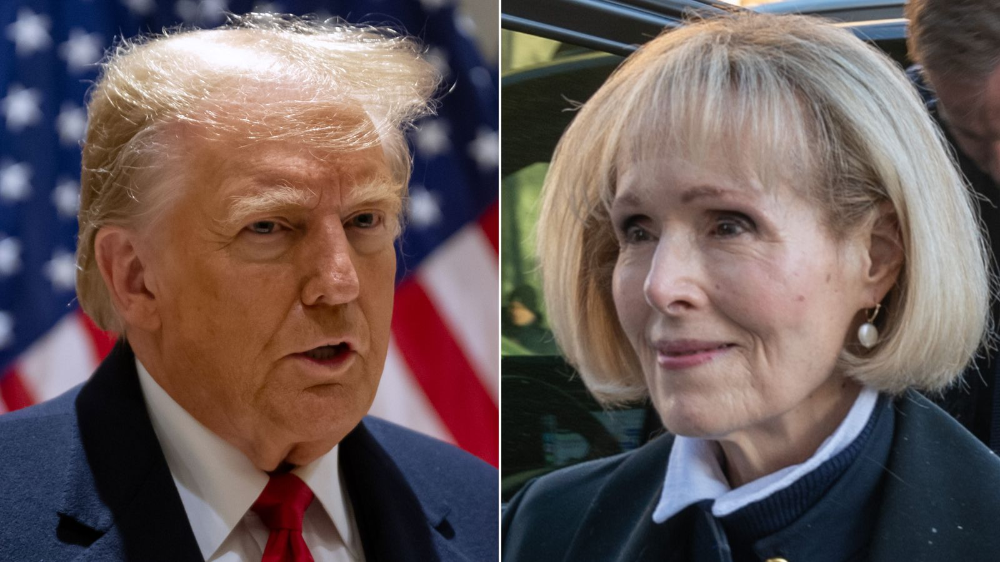
e-jean-carroll-trump.pngCritics argue that a jury found Trump liable in E. Jean Carroll’s civil case (sexual abuse and defamation), Critics also argue that there are many other public allegations of sexual misconduct. Trump denies wrongdoing, and supporters argue the allegations are politicized; critics argue the volume and the court outcomes matter for public trust.
Conclusion: Context, Not Conviction — and an Invitation to Clarify
trump-epstein.pngThe purpose of this compilation is not to declare guilt or innocence, but to lay out reported facts, allegations, and associations that critics argue are relevant to public trust. Some items above are strongly documented in mainstream reporting; others are explicitly labeled unverified or contested.
If Trump, his representatives, or defenders believe any section is missing context, inaccurate, or misleading, this page is intended to be updated: clarifications, primary documents, and credible rebuttals can be added directly under the relevant section so readers can compare claims side-by-side.
Trump’s Social Circle with Jeffrey Epstein
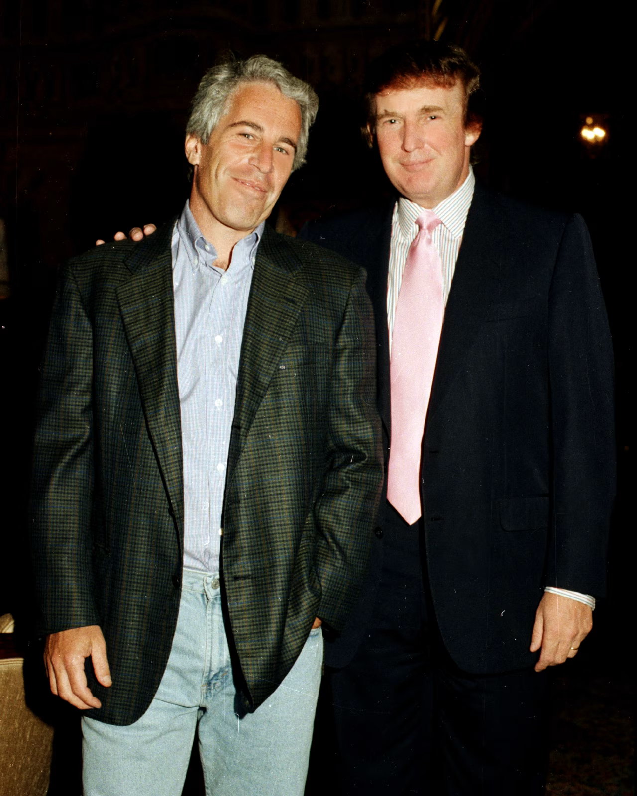
trump-epstein.png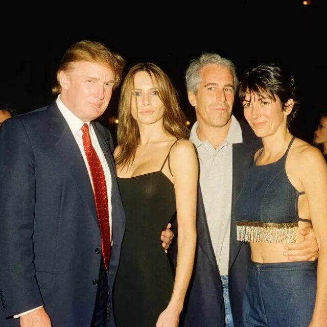
trump-epstein-melania-ghislane.pngDonald Trump had a social and professional relationship with financier Jeffrey Epstein, a convicted sex offender, that dates back to the late 1980s and 1990s. Footage from 1992 shows Trump and Epstein together at a Mar-a-Lago party, laughing, pointing at young women, and enjoying each other’s company. In 2000, Trump and his then-girlfriend (now wife) Melania were photographed socializing with Epstein and British socialite Ghislaine Maxwell at Trump’s Palm Beach club. In a 2002 interview, Trump spoke glowingly of Epstein as a “terrific guy,” noting “he likes beautiful women as much as I do, and many of them are on the younger side.”
These comments and interactions, now viewed in light of Epstein’s 2008 conviction for soliciting a minor and 2019 sex trafficking charges, have raised questions about the extent and nature of Trump’s friendship with Epstein. Trump has since downplayed his ties to Epstein, claiming they fell out around 2004 and stating in 2019, “I was not a fan of his.” The exact cause of their falling-out remains unclear, though one account suggests they clashed in 2004 over bidding on the same Palm Beach mansion.
Epstein was a member of Trump’s Palm Beach club, Mar-a-Lago, for many years. One of Epstein’s most prominent victims, Virginia Roberts Giuffre, has stated that she first met Epstein at Mar-a-Lago when she was working there as a 16-year-old spa attendant in 2000. Giuffre has said it was Ghislaine Maxwell who approached her at the club and recruited her to work for Epstein.
Trump himself is not accused of involvement in Giuffre’s case, and Giuffre has stated that Trump did not proposition or abuse her. Years later, Trump has said he banned Epstein from Mar-a-Lago; reporting has discussed disputed details around timing and cause.
A widely shared clip/source in the current discourse is an X.com post that purports to show Jeffrey Epstein describing himself as Donald Trump’s closest friend for roughly a decade. If authentic, this would be significant evidence regarding the depth and duration of their relationship and is therefore included here as a reference point for readers to evaluate.